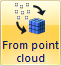
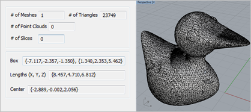
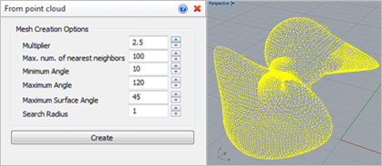
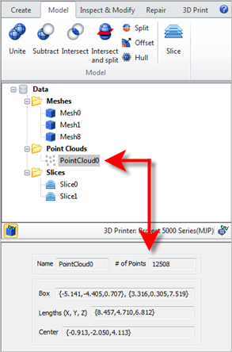

Use this command to create a new mesh from one or more Point Cloud objects. The new Mesh is then added to the Browser for use with other RhinoCAM functions.
 Mesh created and added to the RhinoCAM Browser
|
|
Screen Pick
|
Optional Information
|
Step 1
|
Select the point cloud object and then press Enter. You can select it from the graphics window or from the Browser.
|
You can select a mesh first and then select the command icon.
|
Step 2
|
-
|
Adjust the command options as needed. Refer to the Mesh Creation Options listed below.
|
Step 3
|
Pick the Create button from the RhinoCAM Browser. The Mesh is created and added to the Data Tree.
|
The Mesh is also displayed in the graphics window.
|
|
During point cloud selection: 
After point cloud selection:  or or 
|
 This command will create a mesh across the point cloud object. Depending on the point data contained within the point cloud and the Mesh Creation Options you select, the resulting mesh may be open or closed. This command will create a mesh across the point cloud object. Depending on the point data contained within the point cloud and the Mesh Creation Options you select, the resulting mesh may be open or closed.
|
|
The following Options are available:
 Select Point Cloud Object
|
•Multiplier
The multiplier of the nearest neighbor distance to obtain the final search radius for each point (this will make the algorithm adapt to different point densities in the cloud). •Max. num. of nearest neighbors
The maximum number of nearest neighbors to be searched for. •Minimum Angle / Max Angle
The minimum and maximum angle that each triangular facet can have. •Maximum Surface Angle
Don't consider points for triangulation if their normal deviates more than this value from the query point's normal. •Search Radius
The sphere radius to be used for determining the nearest neighbors used for triangulating facet creating. •Create
Select this button to create the mesh using the parameters above. |
Once created, a Point Cloud object is added to the Browser. Selecting it from the Data Tree will show its Name and # of Points as well as the entire model extents (Box, Lengths and Center) in the Information Window.
 Point Cloud Data in 3DPrint Browser |
 Using Point Cloud Data: It is highly recommended that you use the Inspect & Modify tools to check a mesh resulting from point cloud data. You can use the Repair Tools to fix any gaps or missing facets attributed to faulty point cloud data.. Using Point Cloud Data: It is highly recommended that you use the Inspect & Modify tools to check a mesh resulting from point cloud data. You can use the Repair Tools to fix any gaps or missing facets attributed to faulty point cloud data..
|
|